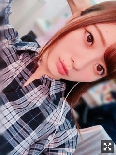
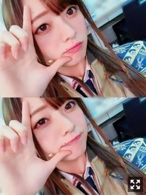
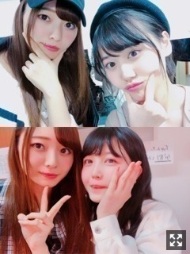

支えられて気づく
みなさまこんにちは！！
乃木坂46 ３期生の
梅澤美波です！！

むすんでないでーす
手で髪の毛持ってます〜
久しぶりになってしまって
ごめんなさい( .. )
最近のわたしは
電車の風で羽織ってたアウターを2メートルくらい吹き飛ばされたり
寝ぼけながら携帯しててなぜか電車に乗ってる気分になってて
急に携帯から音楽が爆音で鳴り出して焦ってビクッとなったり
恥ずかしい思いばかりしております
（笑）
ついてない日も
たまにはありますよね( .. )（笑）
先日、舞台「星の王女さま」
東京公演の千穐楽を迎えました！
名古屋の公演も残っているので
その時にまた書きますが、、
東京公演お越しくださった皆様、
本当にありがとうございました！
絶対泣かない、まだ名古屋あるもん！
挨拶のとき言葉がつまりました。（笑）
そのうえ
トリプルカーテンコールで
お客様がスタンディングオベーション！
泣きました（笑）
あの光景見たらなんかもう
溢れました、涙が☺︎（笑）
あ〜たくさんの方に支えられてるなあ
って、実感する瞬間でもありました。
本当にありがとうございました！
名古屋公演、
お越しくださる方はお楽しみに！
全力で頑張って参ります。
終わったら舞台に関して
また書きます！

宇宙飛行士リンドバーグ！
とても愛くるしいキャラクターだなと
感じています、
それを表現するのが難しいですが
観ている方に伝わるといいなあ
そして
３期生のMV
「トキトキメキメキ」が公開されました！
センターはれんか！
おめでとう∠( ˙-˙ )／
可愛いが詰まりすぎてて
胸がいっぱいになります、、
フロント３人のフレッシュさが
映像から伝わってると思います！
そして全体からも！
３期曲は毎回ポジションが変わったり
センターも変わったりするので
ファンの方も楽しみなのではないかな☺︎
振り付けが物凄く可愛いので
私も頑張っています、、！！（笑）
注目ポイントは沢山ありますが
私的には衣装！！
まずパジャマ！
みんなものすごく可愛いんです！
みんなのパジャマ萌えるでしょ( ˙-˙ )౨
私のは柄が和っぽくて
身体のラインが綺麗に見えて
すごいオシャレなパジャマなの(；；)
大人っぽくして下さいました！
一目見たときからかわいい〜欲しい〜(；；)ってなってた、、
そして私服衣装！
これもちょーどタイプ(；；)
一人一人の注目して見てみてください！
すごくオシャレなんですよ〜
私のはワンピースに
スカートが縫い付けてあるんですが
これもその衣装さんの手作りなんです！
本当にすごい！
ぜひ衣装にも注目してみてくださいね！
最後のカットで
れんかを膝枕しているのですが
可愛くてたまりませんでした
（笑）
そしてアンダー曲
「新しい世界」のMVも公開されました！
メロディも世界観もすごく好き。
初めての３期生が合流させていただいた大切な曲です。
この日の撮影は
まさかの雪でした！
寒いのが大好きなので喜びましたが
さすがに長時間となると
身体が凍りつきそうでした☺︎（笑）
先輩方とのMV撮影
とても楽しかったなあ〜
そしてわたしは一列目の
１番下手側に立たせていただいています。
この場所で踊れること、
とても感謝しています、
りりあとシンメです。
先輩方のパワーに
私達も負けずに頑張ります！！
２曲とも、
全国握手会での披露があります！
楽しみ！ぜひお待ちしています！
トキトキメキメキのパジャマ衣装です〜
それと、先日
ファンレターを受け取りました！
心強いなあ、私には味方が沢山いるんだなあって改めて思えるきっかけになります。
温すぎるその言葉に
涙がでます、ありがとう
私にとって今が１番頑張らなきゃいけない時期だと感じていて、でも前に進むにつれて不安がすごくて、
元気をもらえます。
本当にありがとう！
今日の朝知って飛び起きました！
樋口さん、欅坂46さんの土生さん！
JJ専属モデルおめでとうございます(；；)！！
心から嬉しい！私まで嬉しい！
優しくて大好きな樋口さん、
そして初期からずっと推しメンの土生さん！
お二人を紙面で見るのが楽しみで仕方がない(；；)♡

舞台来てくれたみづき〜
くぼ〜
そしてよだ〜
久しぶりに会うとやっぱり
みんなテンションがすごく高くて
見てて温かい気持ちになりました！
みんな泣いたって！
嬉しい！泣かしちゃった〜✌︎( ˙-˙ )✌︎
先輩方も来てくださったり
毎日励みになっていました(；；)
このまま名古屋も頑張ります！
よーーーし
いちごも食べたことだし
お風呂に行ってまいる！！
また更新します〜
おやすみ
どんなときでも誰かが近くにいると気持ちが紛れます
苦しかったことも忘れてしまうくらい
Original：https://www.nogizaka46.com/s/n46/diary/detail/44499?ima=4954&cd=MEMBER